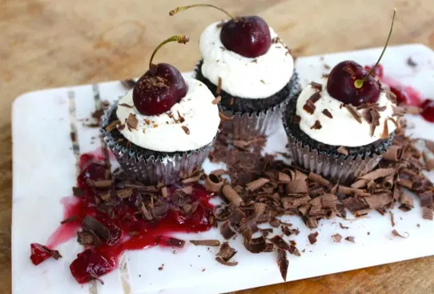

← Volver al módulo 1

Cup Cake Selva Negra
Cup cakes individuales con relleno de cherry y crema chantilly, decorados con chocolate y cerezas.
Ingredientes
- 1 ½ taza de harina
- 125 ml de leche
- 2 huevos
- 1 cucharada de jugo de limón
- 125 gr de azúcar
- 60 ml de aceite
- 1 cucharada de esencia de vainilla
- 8 gr de cocoa amarga
- ½ cucharada de colorante rojo en gel
- 1 cucharada de bicarbonato
- 1 cucharada de vinagre blanco de manzana
- Pirotines
Relleno
- 50 gr de queso crema
- 50 gr de crema de leche
- 3 cucharadas de azúcar glas
- Cherry al jugo
Preparación
Preparar el mise en place.
Batir los huevos con azúcar hasta que cremen, agregar aceite y esencia, luego añadir cocoa y polvo de hornear, mezclar en forma envolvente.
Verter la mezcla en los pirotines y hornear por 30 minutos a 180 °C.
Relleno
Batir la crema de leche, agregar el queso crema y mezclar con el jugo de cherry.
Decoración
Batir la crema de leche a velocidad baja, agregar azúcar y batir hasta obtener punto chantilly.
Hacer un hueco en medio del cupcake, rellenar con la mezcla de cherry y crema, y cubrir con la crema chantilly.
Decorar por arriba con un cherry.